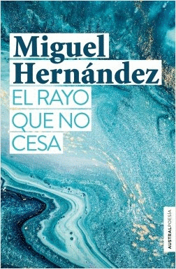

Miguel Hernández

Libros:
Perito en lunas

Poemas:
Las abarcas desiertas
Cantautor/a:
Joan Manuel Serrat
Umbrío por la pena
Cantautor/a:
Joan Manuel Serrat
Una querencia tengo por tu acento
Poema recitado:
Yo sé que ver y oír a un triste enfada
Poema recitado:
El rayo que no cesa

Poemas:
No cesará este rayo que me habita
Cantautor/a:
Vicente Monera
Me tiraste un limón, y tan amargo
Poema recitado:
Te me mueres de casta y de sencilla
Poema recitado:
Elegía a Ramón Sijé
(En Orihuela, su pueblo y el mío, se me ha
muerto como el rayo Ramón Sijé, con quien
tanto quería.)
Cantautor/a:
Joan Manuel Serrat
Viento del pueblo

Poemas:
Epístola a Norah Borges
A la orilla de un pozo